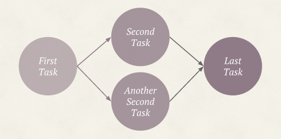
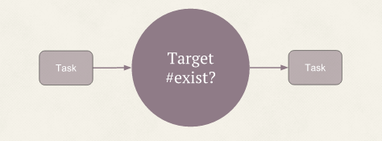
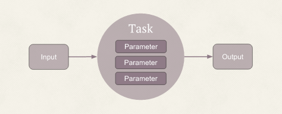

Overview
Tumugi is inspired by Luigi written by Python, and our goal is create a better alternative of Rake. It can describe and run workflow written by ruby code.
Dependency resolution and parallel execution
Tumugi can resolve dependencies of tasks in a workflow and automatically run task in parallel if dependency task is already completed.

If First Task is completed, Second Task and Another Second Task run in parallel. Last Task wait until Second Task and Another Second Task completed.
Building a workflow as code
Using tumugi, workflow file is just a ruby code like below. So you can use any editors and rubygems as you like. Workflow as code is also good for version control, code review.
task :last_task do
requires [:second_task, :another_second_task]
end
task :second_task do
requires :first_task
end
task :another_second_task do
requires :first_task
end
task :first_task do
end
Target and Parameters

Target is input and onput of Task, and is a ruby class which has at least exist? method.

Parameter is another input of Task. Task#run method can refer these parameters and user can set parameter value from CLI options.
Plugin based architecture
Tumugi is based on plugin architecutre. All Task and Targets are made by plugin. Currently you can create custom Task and Target by plugin or reuse existing plugins.